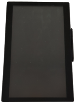

IntelliScan XDS
- A4문서를 550매/분의 처리속도로 초고속 Scan,인식,Sort
- 전 세계 Market Share 1위 업체
- BPR 센터 및 문서고용 대용량 문서 스캐너
- 사용자가 지정하는 종이문서를 각 단위 Pockets에 자동 분류기능 탑재
(ex : 해지서류 자동분류 시스템)
| 구분 | 사양 |
|---|---|
| 스캔 가능 문서 | 수표, 전표, A4, A3용지 등 (67.3mm× 76.2mm ~ 304.8mm× 431.8mm) |
| 스캔 해상도 | 100dpi ~ 300dpi |
| 스캔 처리 속도 | 550ppm 흑백/칼라 동일 속도 (A4, 200dpi 기준) 350ppm 흑백/칼라 동일 속도 (A4, 300dpi 기준) |
| Hopper 용량 | 1,000매 이상 (연속 급지 가능) |
| Pockets | Single Economy Pockets Universal Pockets Multi Pockets (기본 5pks, 5pks 단위 증설 가능) |
| 이중급지 방지 | Ultra Sonic Double Detector (초음파 방식) |
| 급지 방식 | 진공흡입 및 벨트 방식 |
| OS | WIN7 32bit |
| 기타 | MICR Header, Ink Jet Printer, Imprinter |
HGS-Series
- 자기앞수표 위변조 감별을 위한 MICR Header 및 UV/IR 센서 장착
- A4 용지를 1분당 100매 처리속도로 Scan 가능
- 국내 어음교환 업무 Market Share 1위 제품
- 고해상도의 CIS와 다양한 이미지 필터(Image Enhancement Filter)를 응용함으로써 최상의 이미지를 제공합니다.
- 스캔, MICR 독취와 동시에 수표의 교환인을 압인할 수 있는 오토스탬핑 기능을 제공합니다.
| 구분 | 사양 |
|---|---|
| 스캔 가능 문서 | 수표, 전표, A4, 신용카드, 신분증 등 (54mm~216mm) |
| 스캔 센서 | Contact Image Sensor(CIS) |
| 스캔 해상도 | 200dpi ~ 600dpi |
| 스캔 처리 속도 | 100ppm 흑백 속도 (A4, 200dpi 기준) 60ppm 칼라 속도 (A4, 200dpi 기준) |
| Hopper 용량 | 500매 이상 |
| 이중급지 방지 | Ultra Sonic Double Detector (초음파 방식) |
| 인터페이스 | High Speed USB 2.0 |
| 드라이버 | Hantle Driver / TWAIN Driver |
| OS | WIN 7, XP, Vista |
| 전원 | 220V, 50/60Hz |
| 크기 | (W)350mm*(D)420mm*(H)300mm |
| Option | MICR(E13B / CMC7), Endorse(Inkjet 12pin) |
E-1150
- 수표 및 지로 용지를 1분당 1,150매 속도로 처리 가능
- 전 세계 Market Share 1위 업체
- 어음교환센터 및 OCR센터용 Reader Sorter
- 사용자가 지정하는 종이문서를 각 단위 Pockets에 자동 분류기능 탑재
| 구분 | 사양 | |
|---|---|---|
| 스캔 가능 문서 | 수표, 지로 (OCR장표, 공과금 등) (12.4Cm*7.0Cm~22.2Cm*10.8Cm) | |
| 스캔 해상도 | 200dpi | |
| 스캔 처리 속도 | 1,150ppm (수표 기준) | |
| Hopper 용량 | 2,500매 이상 | |
| 용량 | 450매/Pocket | |
| 기본 | 12Pockets | |
| 증설단위 | 12Pockets | |
| 최대 | 36Pockets | |
| 크기 | (W)296Cm*(D)76.2Cm*(H)171.5Cm | |
| OS | Windows NT/2000/XP | |
| Reader Module | MICR(E13B,CMC7), OCR(Option) | |
E-600
- 수표 및 지로 용지를 1분당 600매 속도로 처리 가능
- 전 세계 Market Share 1위 업체
- 어음교환센터 및 OCR센터용 Reader Sorter
- 사용자가 지정하는 종이문서를 각 단위 Pockets에 자동 분류기능 탑재
| 구분 | 사양 | |
|---|---|---|
| 스캔 가능 문서 | 수표, 지로 (OCR장표, 공과금 등) (12.4Cm*7.0Cm~22.2Cm*10.8Cm) | |
| 스캔 해상도 | 200dpi | |
| 스캔 처리 속도 | 600ppm (수표 기준) | |
| Hopper 용량 | 2,500매 이상 | |
| 용량 | 450매/Pocket | |
| 기본 | 12Pockets | |
| 증설단위 | 12Pockets | |
| 최대 | 36Pockets | |
| 크기 | (W)296Cm*(D)76.2Cm*(H)171.5Cm | |
| OS | Windows NT/2000/XP | |
| Reader Module | MICR(E13B,CMC7), OCR(Option) | |
TH-1500TB
- 은행, 병원, 국세청 등에서 사용 중이며, 공공, 서비스업종 등 다양한 산업분야의 신규 시장 수요 예상
- 순수 국내 기술로 설계 및 제조
- 2048 levels 필기 압력 감지
- 전자펜과 손터치 겸용
LCD Specification
| Model NO. | TH-1500TB |
|---|---|
| Diagonal Size | 15 inch (4:3) |
| Displayable Resolution | 1024(H) * 768(V) |
| Pixel Dimension | 0.297 * 0.297 mm |
| LCD Display Color | 16.2 M |
| Contrast Ratio | 1,000 : 1 |
| Brightness Time | 16 ms |
| Active Display Area | 304.1 * 228.1 mm |
| View Angle | +/- 75º(H), +/- 80º(V) |
| Cables | Audio In, VGA15-pin, USB-connector |
Writing spectfication
| Model NO. | TH-1500TB |
|---|---|
| Touch Technology | Electromagnetic |
| Resolution | 2000 lpi |
| Accuracy | +/- 0.5 mm |
| Pressure Level | 2048 levels |
| Interface | USB |
| Report Rate | 220 reports/per second |
| Read Height | 8 mm |
| Writing Height | 6 mm |
| Oreration System | Windows 7, XP MAC OS 10.2.8 or above |
TH-1500TW

- 은행, 병원, 국세청 등에서 사용 중이며, 공공, 서비스업종 등 다양한 산업분야의 신규 시장 수요 예상
- 순수 국내 기술로 설계 및 제조
- 2048 levels 필기 압력 감지
- 전자펜과 손터치 겸용
LCD Specification
| Model NO. | TH-1500TB |
|---|---|
| Diagonal Size | 15.6 inch (4:3) |
| Displayable Resolution | 1024(H) * 768(V) |
| Pixel Dimension | 0.297 * 0.297 mm |
| LCD Display Color | 16.2 M |
| Contrast Ratio | 1,000 : 1 |
| Brightness Time | 16 ms |
| Active Display Area | 304.1 * 228.1 mm |
| View Angle | +/- 75º(H), +/- 80º(V) |
| Cables | Audio In, VGA15-pin, USB-connector |
Writing spectfication
| Model NO. | TH-1500TB |
|---|---|
| Touch Technology | Electromagnetic |
| Resolution | 2000 lpi |
| Accuracy | +/- 0.5 mm |
| Pressure Level | 2048 levels |
| Interface | USB |
| Report Rate | 220 reports/per second |
| Read Height | 8 mm |
| Writing Height | 6 mm |
| Oreration System | Windows 7, XP MAC OS 10.2.8 or above |
Finger Scan-D
- 오물질(인주잔상)의 완벽한 처리 (특허출원번호:10-2014-0029563)
- 도장 입력부분의 오염(인주 등)과 관계없이 입력한 도장 이미지를 완벽하게 인식
- 지문 Scan 알고리즘을 활용하여 본인 부인방지 용도로 활용 가능
- 마이크로소프트社 WHQL 골드 파트너 레벨 획득으로 안정적인 드라이버 호완성 보증
- 하나의 기기에서 도장, 지문 스캔이 모두 가능
| 구분 | 사양 |
|---|---|
| 이미지 선명도 | FBI IAFIS Appendix F,PIV-071006 |
| 해상도 | Max. 500 DPI |
| 스캔 사이즈 | Maximum 40 x 40 mm |
| 스캔 속도 | 25 frames per second (fps) |
| 인터페이스 | USB 2.0 (High Speed) |
| 공급 전원 | AC 100~240V |
| 제품 사이즈 | 110mm x 195.7mm x 68mm (W x D x H) |
| LED | 4 status LEDs |
| 지원 OS | Windows 2000,xp and 7 |
HPA-500K
- 현금 입출금 기능을 제외한 모든 금융거래 가능
- IC카드, 통장, NFC Reader 모듈 탑재
- 손터치, 음성안내 기능
- 대기 고객 번호표 발행 기능
- H/W 및 운영 프로그램 포함 자체 개발 완료
| 구분 | 사양 |
|---|---|
| 고객 조작부 | 19” TFT LCD Color |
| Multi-Touch Screen(2Point) | |
| 5T 강화유리 적용 | |
| Privacy Film | |
| 통장 리더부 | 210 BPI (Head 밀도) |
| F2F (리드 방식) | |
| 카드 리더부 | Motor Driven Type |
| ISO7810 | |
| NFC 리더부 | ISO-14443 Type A, Type B, ISO-18092 |
| 13.56MHz±7kHz | |
| 명세표 출력부 | 3”Thermal Line Printer |
| 2D 바코드 리더 | QR Code, Datamatrix, PDF417 |
| 핀패드 | ADA2010 Standards 지원 Master and Session 키 지원 |
| 부가 장치 | 인체 감지 센서 장착 음성안내 기능 시각장애인용 (시각장애인용) |
신용카드전용 미니키오스크
- 제품의 경량화 및 설치 부담의 최소화
- 우수한 공간활용성 (W x H x D : 490 x 562 x 106mm)
- LCD부 강화 아크릴 3T적용, Key Lock적용, Air Damper 채용
- 전면 판넬부 모든 부품의 집중 배치 (우수한 보수성)
- 제조사 모델 영수증 프린터 채용 (Near-End, End 감지 가능)
- 우수한 Jam 제거 용이성 및 내구성(Cutter 30만회, TPH 100km 수명)
- 제조사 초박형 지폐방출기 채용가능